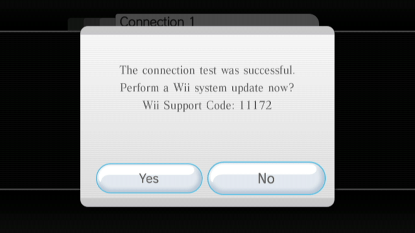

str2hax
Eğer bu öğreticiye bağlı herhangi bir yardıma ihtiyacınız olursa lütfen RiiConnect24’ün Discord sunucusuna katılın (tavsiye edilen) ya da [email protected] üzerinden mail atın.
Eğer İnternet Servis Sağlayıcı’nız veya ağ ortamınız, özel DNS sunucularını önlüyorsa str2hax’ın çalışmayacağını ve başka exploit kullanmanız gerektiğini aklınızda bulundurun.
str2hax, Wii’nin Son Kullanıcı Lisans Anlaşması yüklenirken çalışan bir Wii exploitidir. Wii’nizin DNS’sini değiştirmeye izin veren bir İnternet bağlantısı dışında başka bir şey gerektirmez.
İhtiyacınız olan şeyler
- İnternet bağlantısına sahip bir Wii
Talimatlar
Bölüm I - Bağlanma
Explioti barındıran sunucuya erişebilmek için DNS’i ayarlamanız gerekmektedir.
Wii Optionskısmına gidin.
Wii Settingskısmına gidin.
2. SayfayageçipInternet’etıklayın.
Connection Settingskısmına gidin.
- Mevcut bağlantınızı seçin.

Change Settingskısmına gidin.
Auto-Obtain DNSkısmına (IP Address kısmına değil) gidipNo’yuseçin, ardındanAdvanced Settingskısmına gidin.
- Type in
18.188.135.9as the primary DNS. - Type in
18.188.135.9as the secondary DNS. - Önce
Confirm’iardından daSave’iseçin.
- Bağlantı testi yapmak için
OK’iseçin.
- Eğer bağlantı testi başarılıysa
No’yuseçip Wii Sistem Güncellemesi’ni geçin.  - Eğer başarısız olduysa lütfen başka bir exploit kullanın.
- Eğer bağlantı testi başarılıysa
Bölüm II - Exploiti Çalıştırmak
- Önce
InternetardındanUser AgreementsveyaAgreement/Contactkısmına gidipYesdeyin. - Eğer açık mavi bir arkaplan önünde bir midilli görüyorsanız, doğru ayarlamışsınız demektir. Exploitin çalışması için 1-2 dakika bekleyin (genelde 1 dakika 25 saniye sürüyor). Exploit, HackMii Installer’ı yükleyeceğinden devam edin.
Eğer HackMii Installer çalışmazsa ve donarsa (imleci hareket ettiremezseniz) ya da 1-2 dakika olmasına rağmen exploit çalışmazsa, Wii’nizi yeniden başlatıp tekrar deneyin.
If you have installed a mod like CTGP Revolution or Project+, str2hax may load that instead. If it does, restart your Wii and try again without your SD card inserted.
Homebrew Channel ve BootMii Yüklemesinden devam edin